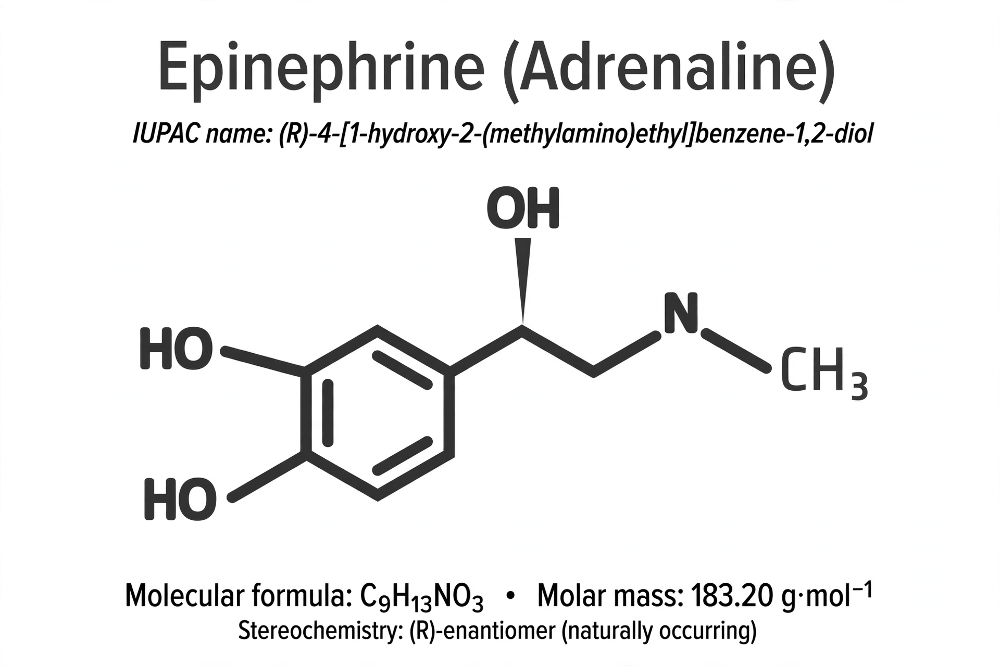

Epinephrine

| Other names | Adrenaline |
|---|---|
| Formula | C₉H₁₃NO₃ |
| Class | Catecholamine; sympathomimetic |
| Source | Adrenal medulla; some CNS neurons |
| Receptors | α₁, α₂, β₁, β₂, β₃ adrenergic receptors |
| Key uses | Anaphylaxis, cardiac arrest, asthma, local anaesthetic adjunct |
Epinephrine, also known as adrenaline, is a hormone and neurotransmitter produced by the adrenal glands (medulla) and by a small number of neurons in the medulla oblongata. As the principal hormone of the "fight-or-flight" response, it increases heart rate and contractility, dilates the airways and pupils, constricts blood vessels in the skin and gut, mobilises glucose and fatty acids, and redirects blood flow to skeletal muscle.
Physiology
Epinephrine is synthesised from the amino acid tyrosine via dopamine and norepinephrine, the final methylation step being catalysed by the enzyme PNMT under the influence of cortisol. It acts on alpha and beta adrenergic receptors; β₁ stimulation raises cardiac output, β₂ stimulation relaxes bronchial smooth muscle, and α₁ stimulation causes vasoconstriction. It is rapidly metabolised by COMT and MAO to metanephrine and vanillylmandelic acid.
Medical use
As a medication, epinephrine is the first-line treatment for anaphylaxis, given by intramuscular injection — famously via auto-injectors such as the EpiPen — and is used in advanced life support for cardiac arrest, for severe asthma attacks, croup (nebulised), and added to local anaesthetics to prolong their action and reduce bleeding. Side effects include tremor, anxiety, palpitations and raised blood pressure.